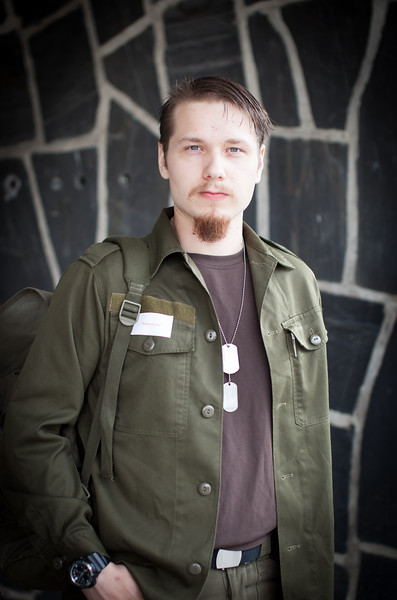
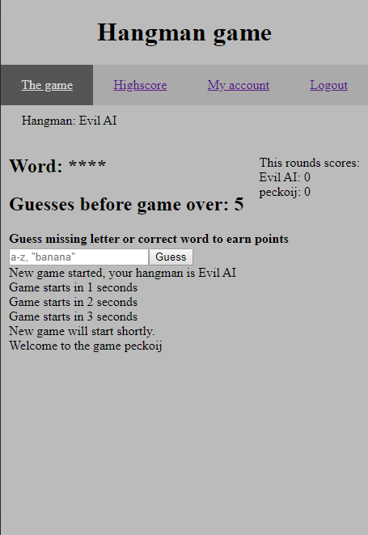

Jon Pekkonen
aka Peckoij
Olen 1994 Etelä-Savossa syntynyt mies. Lapsuuden ja nuoruuden asuin Kuortin kylässä Pertunmaalla.
Peruskoulun jälkeen menin lukioon Heinolaan, josta kirjoitin ylioppilaaksi keväällä 2013. Lukion
jälkeen työsketelin isän metallialan yrityksessä loppu vuoden, jonka jälkeen aloitin
varusmiespalveluksen. Vuotta myöhemmin jatkoin töitä perheyrityksessä opintojen alkua odotellessa.
Syksyllä 2015 aloitin fysiikan opinnot Jyväskylän yliopistossa. Opiskelin yliopistossa yhden
lukuvuoden, jonka jälkeen siirryin Jyväskylän ammattikorkeakouluun opiskelemaan tietojenkäsittelyn
tradenomiksi. Nämä sivut joita juuri luet on toteutettu tradenomi opintojeni loppuvaiheessa osana
näyteportfoliota.
Tavoitteet
Etsin harjoittelu ja työpaikkaa jossa voisin kehittää taitojani projekteissa työskennellen.
Erityisesti etsin työpaikkaa web-sovelluskehityksen alalta. Itselleni tuttuja kehyksiä ovat Angular
ja Ionic.
Taidot
Kielitaidot
Äidinkieli Suomi, puhun ja kirjoitan englantia melko sujuvasti ja ymmärrettävästi. Osaan jonkin
verran ruotsia, mutta se ei ole vahvuuteni.
Alan kielistä kokemusta löytyy perusteiden verran Javaan ja C#:iin. Enemmän kokemusta löytyy
javascriptin puolelta, erityisesti Angular ja Node.js kehityksestä.

HTML ja CSS
Tein osana opintojani kotisivut asiakkaan kehittämälle tuotteelle "Maagiset madot".
Sivut toteutettiin yhteistyössä asiakkaan, Kauko Sihvosen, kanssa hänen toiveidensa ja
tarpeidensa mukaan hyödyntäen omaa asiantuntemustani toteutuksessa. Sivut ja niiden ulkoasu
sunniteltiin yhdessä asiakkaan kanssa.
Projekti antaa hyvän kuvan perustaidoistani HTML5:n ja CSS3:n saralla.
Kuvaa klikkaamalla pääsee kyseisille sivuille, alla olevasta linkkistä
projektin git repositoryyn.
Maagiset madot projektin git repo

Node.js ja Angular7
Toteutin web-sovelluskehitys kurssin lopputyönä oheisen sivun. Kyseessä on hirsipuu peli
yksinkertaisella Angular frontendillä. Peliä voi pelata yksi tai useampi pelaaja yhtäaikaa
netissä vastuksenaan tietokone, joka arvuuttelee pelaajille sanoja.
Pelin backend on tehty
Node.js:llä ja moninpeli ominaisuuteen käytin socket.io:ta. Pelin UI on hyvin tylsä ja yksinkertainen
koska työn painotus oli pääasiassa sovelluslogiikassa, sekä front- ja backendin yhteistoiminnssa.
Sovellus täyttää PWA (Progressive web application) kriteerit ja sen voi halutessaan lisätä
puhelimen aloitusnäytölle.
Peliä voi käydä kokeilemassa alla olevasta linkistä. Valitettavasti on mahdollista ettei
peli-palvelin ole ylhäällä käyttäjien ja resurssien vähäisyyden takia. Jos sivu ilmoittaa ettei
highscore ole saatavilla ei palvelin ole toiminnassa, tässä tapauksessa
ota yhteyttä jos haluat kokeilla peliä.
Hangman-peli
Hangman-game projektin git repo
Työkokemus
Työntekijä perheyrityksessä, Desomatic Oy
2013-2016
Työnkuva oli hyvin laaja sisältäen kaikenlaista hitsaamisesta maalaamiseen ja IT-tukeen. Tänä
aikana opin myös työnantajan ja yrittäjän näkökulmaa työhön.
Talonmies Kuortin koulussa, Pertunmaan kunta
2012-2013
Vakituisen talonmiehen sijaisena viikonloppuisin ja lomaikoina. Työtehtäviin kuului muunmuassa
rakennuksen lämmittäminen, lumityöt ja tilojen tarkastus ongelmien varalta. Työ oli hyvin
itsenäistä ja vastuullani oli pitää puulämmitteinen rakennus ja sen asukkaat lämpimänä
ympäri vuorokauden talvikuukausina.
Koulutus
Tietojenkäsittelyn tradenomi, Jyväskylän ammattikorkeakoulu JAMK
2016-
Arvioitu valmistuminen 2020 jälkipuoliskolla
Fysiikan opintoja, Jyväskylän yliopisto
2015-2016
Kursseja fysiikasta, matematiikasta ja C# ohjelmoinnista. Opinnot keskeytetty alanvaihdon
takia.
Aliupseerikurssi, Puolustusvoimat
2014
Ryhmänjohtajakoulutus sekä kokemusta erilaisten ihmisten johtamisesta puolustusvoimissa.
Ylioppilastutkinto, Heinolan lukio
2010-2013